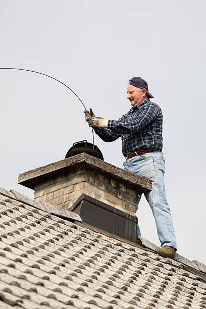
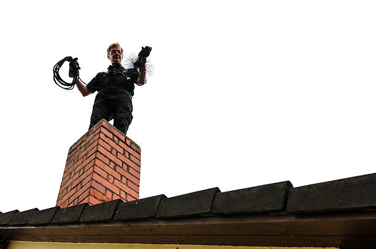

Professional chimney cleaning in Carmel By The Sea California to boost your home's heating efficiency. Our certified team ensures thorough inspections and cleanings for a safer, warmer home in Carmel By The Sea California . Book today!
Click Here To Call Us (877) 848-1711A clean and well-maintained chimney is essential for the safety and efficiency of your home. At Chimney Sweeping, we take pride in offering top-quality chimney sweeping services across all cities in Carmel By The Sea California . Our team of certified professionals ensures your chimney operates at peak performance, protecting your home from potential fire hazards and harmful emissions.
Regular chimney maintenance helps prevent dangerous creosote buildup, enhances the efficiency of your fireplace, and extends the lifespan of your chimney. We use state-of-the-art equipment and techniques to provide thorough cleaning, leaving no soot or debris behind. Whether you have a wood-burning fireplace, gas fireplace, or pellet stove, our services are tailored to meet your specific needs.
Why choose us? We prioritize customer satisfaction and safety. Our team is fully insured, licensed, and trained to handle any chimney-related issue with expertise and care. Additionally, we offer chimney inspections, repairs, and waterproofing to keep your system in top condition year-round.
Don’t let a neglected chimney compromise your home’s safety or comfort. Contact us today to schedule your chimney sweeping service in Carmel By The Sea California and experience the difference of working with trusted local professionals. Let us help you enjoy a safer and cozier home this season!
Residential & commercial Chimney Sweeping
Quality services at affordable prices
Immediate 24/ 7 emergency services


Ensuring your chimney is clean and well-maintained is crucial for the safety and efficiency of your home in Carmel By The Sea California . At Chimney Sweeping, we specialize in expert chimney cleaning and maintenance services that protect your home from fire hazards, improve air quality, and keep your heating systems working at their best.
Our certified chimney sweep technicians use advanced tools and techniques to thoroughly clean your chimney, removing soot, creosote, and other debris that can build up over time. Regular chimney maintenance not only extends the life of your chimney but also prevents costly repairs and potential fire risks.
We also offer comprehensive chimney inspections to identify any underlying issues, such as cracks, leaks, or blockages, that could hinder the performance of your chimney. Our team in Carmel By The Sea California provides affordable and reliable chimney cleaning solutions to ensure your home remains safe, warm, and efficient throughout the year.
Whether you're in need of a routine chimney cleaning or a more extensive maintenance service, Chimney Sweeping is here to help. With years of experience in the industry, our skilled professionals are committed to delivering top-quality chimney services in Carmel By The Sea California .
Don’t wait for a problem to arise. Contact us today to schedule a chimney cleaning or maintenance appointment and keep your home safe and comfortable.
Residential & commercial Chimney Sweeping
Quality services at affordable prices
Immediate 24/ 7 emergency services
Keeping your chimney in excellent condition demands regular attention. Our annual chimney sweeping services are essential preventive measures designed to catch problems before they escalate. We recommend an annual cleaning to maintain optimal performance and safety. Our team is dedicated to ensuring that your chimney operates safely and efficiently for years to come.
alooma18id

The smoke chamber is a critical component of your chimney, but it's often neglected during routine cleaning. Our chimney smoke chamber cleaning service specifically targets this area, ensuring that creosote and soot build-up are effectively removed. This not only enhances the overall efficiency of your fireplace or stove but also greatly reduces the risk of chimney fires.
alooma19id

Our professional chimney inspections in Carmel By The Sea California serve as a comprehensive check-up for your chimney system. Our team, equipped with the latest tools, conducts thorough assessments to assess the structural integrity of your chimney, identifying any necessary repairs or maintenance needed. Choose us for your inspection needs; we are known for our thoroughness, reliability, and adherence to safety standards.
alooma20id
At Chimney Sweeping, we specialize in chimney cleaning for homes in Carmel By The Sea California . We understand how vital it is to maintain a safe and efficient chimney. Whether you have a gas, wood, or pellet stove, our team has the expertise to address all your chimney cleaning needs. Our cleaning process includes thorough inspections, and our goal is to keep your home warm and safe while preventing costly repairs down the line.
alooma21id
There are times when your chimney might encounter unexpected issues, requiring immediate attention. Our emergency chimney sweeping services are available 24/7, ensuring that you can reach us when you need help the most. Whether it’s after a storm that causes debris to block your chimney or sudden smoking issues during use, our trained professionals are ready to respond swiftly. We prioritize your safety and comfort, so don’t hesitate to call us if you encounter an emergency situation.
Fireplace safety is paramount in ensuring that your home remains a safe haven during colder months. Our fireplace safety inspections in Carmel By The Sea California include a thorough evaluation of your entire chimney system, checking for blockages, structural issues, and degradation. Armed with a detailed report, you and your family can make informed decisions about repairs and maintenance. We are committed to helping you maintain a safe and functional fireplace for your home's comfort.

Businesses that utilize fireplaces or heating systems need exceptional care and service. Our chimney sweep for businesses is tailored specifically to meet the demands of commercial spaces. We understand the importance of compliance and safety for business operations, providing comprehensive inspections and cleanings that ensure adherence to local codes and standards. Our team is trained to work with various business types and schedules to minimize disruption while guaranteeing your chimney system operates efficiently and safely. Partner with us for unparalleled service and business continuity!

Chimney soot and debris buildup can lead to significant safety hazards, but you can rely on our expert chimney soot and debris removal services . We are equipped with the latest tools and expertise to thoroughly remove all forms of buildup, ensuring your chimney operates efficiently and safely. Our comprehensive cleaning services don't just address the visible soot—they also include inspections that pinpoint potential issues and ensure your chimney is in prime condition. Choose us for reliable chimney cleaning and restoration, and enjoy peace of mind while using your fireplace or heating system.
Years Experience
Expert Technicians
Satisfied Clients
Compleate Projects
At Chimney and Sweeping, we understand the importance of a clean and safe chimney for your home in Carmel By The Sea California . As the leading chimney sweeping service provider across all cities in Carmel By The Sea California we are committed to delivering top-notch solutions that keep your home warm and your chimney operating at peak efficiency.
Our team consists of highly trained and certified professionals who utilize state-of-the-art equipment to remove soot, debris, and blockages from your chimney. Regular sweeping not only improves the efficiency of your heating system but also prevents dangerous chimney fires, carbon monoxide buildup, and other hazards. We take pride in our meticulous approach to ensure your home remains safe year-round.
We prioritize customer satisfaction and always go the extra mile to provide prompt, reliable, and courteous service. Our transparent pricing structure means there are no surprises, and we ensure that every job is completed to the highest standards. Whether you have a traditional fireplace, a wood stove, or a gas chimney, we have the expertise to handle it all.
When you choose Chimney and Sweeping in Carmel By The Sea California you’re choosing a trusted partner dedicated to the well-being of your home. Our reputation for excellence speaks for itself—countless satisfied customers across Carmel By The Sea California rely on us to keep their chimneys clean and safe. Don't wait for problems to arise—contact us today to schedule your chimney sweeping service!
If you're searching for chimney sweeping services near me, look no further! Our experienced team offers top-notch chimney sweeping tailored to your specific needs . Why is chimney sweeping so vital? Regular sweeping not only enhances the efficiency of your fireplace but also prevents dangerous chimney fires and ensures safe ventilation. Our professionals use state-of-the-art equipment and a careful process to remove soot, creosote, and other blockages from your chimney, providing peace of mind to homeowners throughout the area. With our friendly service and commitment to safety, it's easy to see why we are the go-to choice for chimney sweeping .
If you’re looking for affordable chimney sweeping services you've come to the right place! Our mission is to provide top-notch chimney cleaning without breaking the bank. We understand that homeowners often have budgeting constraints, which is why we've made it our priority to offer competitive pricing on all our services. Our experienced chimney sweeps not only save you money up front but also help prevent costly repairs down the line by ensuring that your chimney is free of soot and blockages. With flexible scheduling options, our team is ready to work with you to ensure your fireplace and chimney systems are clean and safe, providing peace of mind and assurance. Discover why we are the top choice for affordable chimney sweeping in your area!
Quality chimney maintenance doesn't have to break the bank. At Chimney Sweeping, we are proud to offer affordable chimney sweeping services without compromising on quality or safety. We understand that maintaining your home should be accessible, and our pricing model reflects our commitment to providing excellent value.
Our experienced chimney sweeps are dedicated to delivering thorough cleanings that remove harmful build-up and improve chimney performance, and we offer a variety of packages tailored to fit different budgets and needs. From annual cleanings to multi-year service agreements, we have solutions that cater to every homeowner and business operator.
Not only do we provide competitive prices, but our commitment to customer satisfaction ensures that our service is unmatched in quality. Our professional team is always prepared to discuss your specific needs, answer any questions you may have, and explain our cleaning techniques and safety measures in detail. Choosing Chimney Sweeping means you’re investing in a safe, clean, and efficient chimney system at a price that suits your budget. Don’t let costs deter you from maintaining your chimney; contact us today for a free estimate on our affordable chimney sweeping services .
Regular chimney inspections and cleanings are key to ensuring your fireplace operates safely and efficiently. At Chimney Sweeping, we provide comprehensive chimney inspection and cleaning services that go beyond traditional sweeping. Our experienced professionals understand the critical components that impact your chimney's performance and safety.
Our in-depth chimney inspections assess not only the cleanliness of the flue but also the structural integrity of the chimney itself. Using advanced tools like video cameras, our team can identify cracks, blockages, and other issues that may exacerbate fires or make you susceptible to dangerous carbon monoxide leaks.
Following our inspection, we provide a detailed report along with recommendations for any necessary repairs or services. Our cleaning method goes hand-in-hand with our inspection process, ensuring that all creosote, soot, and debris are thoroughly removed. Trust our certified chimney sweeps to help maintain your fireplace’s health; we are committed to offering transparent pricing, prompt scheduling, and exceptional customer service. When you choose Chimney Sweeping for your chimney inspection and cleaning you’re ensured a safe and enjoyable experience by the fireplace!
In a market flooded with options, finding the best chimney sweeping service can be daunting. With Chimney Sweeping based you can rest assured you’re choosing a team recognized for its excellence, professionalism, and integrity. Our commitment to superior service and customer satisfaction sets us apart as one of the best chimney sweeping companies in the area.
What makes us the best? Our technicians are highly trained, certified, and experienced in dealing with all types of chimneys. We utilize state-of-the-art equipment and eco-friendly products, ensuring that our work not only meets code requirements but exceeds customer expectations. Our transparent pricing and comprehensive service package mean you won't have any surprise fees after the work is complete.
Our reputation is built on trust and reliability. Many of our clients return to us year after year for their chimney servicing needs, confident that we’ll provide the highest-quality care in maintaining their chimneys and fireplaces. By focusing on the client experience, we strive to create long-lasting relationships while guaranteeing safety and satisfaction. Contact us today to discover why so many people trust Chimney Sweeping for all their chimney sweeping needs!
Hiring local chimney sweep contractors has never been easier! We understand that a trustworthy local service provider is essential for various reasons, including convenience, supporting local economy, and immediate responses to your needs. Our team consists of experienced local technicians who are familiar with the unique chimney systems found in the area. We take pride in our personalized service, as every client's needs are different. Our specialists are equipped to handle both routine and emergency chimney services, so whether you're in need of a quick cleaning or a more extensive inspection, we are just a phone call away.
Are you searching for “chimney cleaning services near me” Look no further! Our comprehensive chimney cleaning services are designed to meet the needs of both residential and commercial customers. We utilize eco-friendly products and techniques that respect your home and the environment. Our expert team will clean your chimney efficiently and effectively, reducing your risk of chimney fires and improving the operation of your heating system. We understand the importance of cleanliness in maintaining your home’s safety.
Keeping your residential chimney clean and well-maintained is essential for both the efficiency and safety of your home. Our residential chimney sweeping services focus on providing thorough cleanings coupled with inspections to ensure that your fireplace operates smoothly. We understand that your home is your sanctuary, and safety comes first. That’s why we recommend regular sweeps—at least once a year—to prevent dangerous buildup of creosote. Our professional sweeps are certified and trained, so you can trust that your home is in good hands.
In the heart of any thriving business lies a commitment to safety and excellence. Our commercial chimney sweeping services in Carmel By The Sea California cater to restaurants, hotels, and all other businesses that require chimney maintenance. Keeping your commercial chimney clear of debris and obstructions is essential for compliance with local safety regulations and for protecting your investment. Our professional team is equipped to tackle large-scale chimney problems, ensuring that your business runs smoothly with minimal interruption. We pride ourselves on service that meets the unique needs of your business.
Regular chimney maintenance is paramount in preserving the integrity of your chimney system. Our chimney maintenance services include not only sweeping but also inspections and repairs. We recommend annual maintenance checks to prevent costly repairs and maintain safety standards. With our detailed maintenance plans, we monitor the condition of your chimney, ensuring that it stays clean and operational throughout the year. Trust us to keep your chimney in peak condition.
When considering chimney sweeping services, understanding the cost is vital. Our goal is to provide clear and detailed cost estimates for chimney sweeping . We offer competitive pricing and various service packages to suit your needs. Factors influencing cost may include the size and type of chimney, the level of cleaning required, and any additional repairs needed. Before starting any work, we ensure you have a complete understanding of the costs involved, allowing you to make informed decisions.
Fireplaces are a popular feature in many homes, and they require regular maintenance. Our fireplace chimney cleaning services in Carmel By The Sea California ensure your fireplace operates smoothly and safely. We address all potential hazards from creosote build-up to blockages, and our expert team leaves no stone unturned. Count on us to keep your family warm and safe this season!
Your chimney liner is an essential component of your chimney system, as it protects the chimney walls from heat and corrosion while improving draft. Our chimney liner cleaning services focus on removing any buildup or blockages that impede airflow and create safety hazards. Our experienced team specializes in using advanced techniques to clean your chimney liner thoroughly, ensuring that it operates efficiently and safely. Proper maintenance of your chimney liner can prevent significant repair costs and increase the lifespan of your chimney system. By choosing our services, you prioritize the health and safety of your home.
A well-maintained chimney liner is crucial for the safe operation of your fireplace. At Chimney Sweeping, we offer expert chimney liner cleaning services ensuring that your liner remains in great condition and functional long-term. A clean liner enhances your chimney’s efficiency and safety by improving airflow and preventing dangerous gas leaks.
Over time, chimney liners can accumulate soot and debris, obstructing the proper venting of smoke and gases. Our professional team is fully equipped with the tools needed to clean your chimney liner thoroughly, removing harmful build-up without damaging the liner itself. We understand the nuances of different liner materials, allowing us to provide tailored cleaning that safeguards your chimney’s integrity.
In addition to cleaning, we offer inspections to examine the condition of your liner. Any cracks or wear can pose safety risks; therefore, we check for these issues as part of our comprehensive service. Trust Chimney Sweeping to provide you with reliable chimney liner cleaning services in Carmel By The Sea California paired with professional insights to help you maintain a safe and efficient fireplace.
Wood stoves require regular maintenance to ensure safe operation. Our chimney sweep services specifically tailored for wood stoves in Carmel By The Sea California not only clean but also inspect for safety. We help ensure that your heating system is efficient and compliant with all applicable safety regulations, giving you warmth and peace of mind as the seasons change.
Accumulated soot and debris can significantly hinder the functioning of your chimney and pose severe fire hazards. At Chimney Sweeping, we offer specialized chimney soot and debris removal services in Carmel By The Sea California aimed at restoring the efficiency and safety of your fireplace. Our experienced team is dedicated to delivering thorough cleaning that addresses all of the harmful build-up in your chimney system.
Soot and debris can result from various factors, including the type of fuel used and the frequency of usage. Our technicians are trained to identify the signs of excessive soot build-up and act swiftly to rectify the situation. Using advanced cleaning methods and tools, we guarantee a complete removal of all soot, ensuring your chimney’s safe operation.
In addition to the cleaning process itself, we provide our clients with valuable insights on ongoing chimney maintenance to prevent future build-up. Regular cleaning is an investment in your chimney system's lifespan and performance, and our team is here to ensure you get the best out of your fireplace or wood stove. Choose Chimney Sweeping for professional chimney soot and debris removal in Carmel By The Sea California — ensuring your home is safe, warm, and efficient.
When searching for local chimney cleaning companies, it’s essential to choose one that values community relationships as much as quality service. Our local business in Carmel By The Sea California has built a solid reputation for honesty, reliability, and superior service. We understand the unique needs of our community members, which helps us provide personalized care that larger corporations simply can't match.
alooma17id
Maintaining a clean and functional chimney is crucial for every home in Carmel By The Sea California . Regular chimney cleaning ensures the safety, efficiency, and longevity of your chimney and fireplace. Over time, creosote and soot build up inside the chimney, posing serious fire hazards. Without proper cleaning, this buildup can catch fire, leading to dangerous chimney fires that may cause severe property damage. By scheduling routine chimney cleaning, homeowners can significantly reduce the risk of such hazards.
In addition to fire safety, a clean chimney improves the efficiency of your heating system. A clogged or dirty chimney restricts airflow, which can cause poor ventilation and inefficient burning of wood or fuel. This forces your heating system to work harder, increasing energy consumption and costs. Regular cleaning ensures optimal airflow and improves the overall performance of your fireplace, saving you money on energy bills.
Chimney cleaning also helps prevent the accumulation of harmful gases like carbon monoxide inside your home. A blocked chimney can trap these gases, putting your family’s health at risk. By maintaining a clean chimney, you ensure the proper ventilation of these dangerous gases, creating a safer indoor environment.
For homeowners in Carmel By The Sea California regular chimney cleaning is an essential investment in safety, efficiency, and peace of mind. Contact your trusted chimney cleaning experts today to schedule a thorough inspection and cleaning.
Carmel-by-the-Sea (/kɑːrˈmɛl/), often simply called Carmel, is a city in Monterey County, California, United States, founded in 1902 and incorporated on October 31, 1916. Situated on the Monterey Peninsula, Carmel is known for its natural scenery and rich artistic history. In 1906, the San Francisco Call devoted a full page to the 'artists, writers and poets at Carmel-by-the-Sea', and in 1910 it reported that 60 percent of Carmel's houses were built by citizens who were 'devoting their lives to work connected to the aesthetic arts.' Early City Councils were dominated by artists, and several of the city's mayors have been poets or actors, including Herbert Heron, founder of the Forest Theater, bohemian writer and actor Perry Newberry, and actor-director Clint Eastwood, who served as mayor from 1986 to 1988.
A typical chimney sweeping session takes about 45 minutes to an hour, depending on the chimney's condition.
Yes, we perform both Level 1 and Level 2 inspections to meet your chimney's specific needs.
Our certified professionals, competitive pricing, and dedication to customer satisfaction make us the top choice .
Contact Chimney and Sweeping via phone or our online booking system to schedule your chimney sweeping .
The National Fire Protection Association recommends chimney sweeping at least once a year. In Carmel By The Sea California regular maintenance ensures safety and efficiency.
Weather can cause wear and tear. Regular maintenance by Chimney and Sweeping prevents damage.
No, contact Chimney and Sweeping for an inspection to assess and repair any damage before reuse.
Chimney and Sweeping offers professional chimney cap installation to protect your chimney from debris and animals.
Chimney and Sweeping provides comprehensive chimney sweeping, inspection, and repair services ensuring your chimney is clean, safe, and functioning efficiently.
Chimney sweeping removes creosote buildup, prevents chimney fires, and ensures your home is safe during the heating season.
Yes, we offer fireplace cleaning and maintenance services in Carmel By The Sea California to ensure optimal performance.
Ensure your fireplace is cool, and remove nearby furniture. Our team handles the rest during your appointment in Carmel By The Sea California .
Yes, Chimney and Sweeping employs certified professionals to provide reliable and thorough chimney cleaning .
Regularly check for blockages and avoid burning unseasoned wood. For professional advice, contact Chimney and Sweeping .
Yes, we use environmentally friendly methods for all our chimney cleaning services .
Yes, we offer emergency chimney services to address urgent safety concerns.
Yes, Chimney and Sweeping offers free estimates for all chimney services in Carmel By The Sea California .
Yes, scheduling an appointment ensures our team can provide timely and efficient service .
Chimney and Sweeping takes all necessary precautions to keep your Carmel By The Sea California home clean during the sweeping process.
Prices vary based on chimney size and condition. Contact Chimney and Sweeping in Carmel By The Sea California for a customized quote.
Yes, Chimney and Sweeping provides expert chimney liner installation and repair services .
Absolutely! We offer professional chimney inspections to identify potential issues and ensure safety.
Yes, we offer chimney repairs, including masonry fixes, liner replacements, and crown restoration, throughout Carmel By The Sea California .
Signs include a strong smoky smell, poor draft, or visible soot buildup. If you live call us for an inspection.
Yes, we provide dryer vent cleaning in Carmel By The Sea California to enhance safety and efficiency.
Creosote is a flammable residue that can cause chimney fires. Regular sweeping eliminates this risk.
Yes, our team can safely remove animals from your chimney and install caps to prevent future intrusions.
Yes, Chimney and Sweeping offers inspection and cleaning services for gas fireplaces .
We provide chimney sweeping and related services across all neighborhoods in Carmel By The Sea California .
We service all chimney types, including masonry and prefabricated chimneys, .
Chimney Sweeping did an excellent job cleaning my chimney. They were professional, on time, and very detailed. I will definitely call them again for any chimney cleaning needs in Carmel By The Sea California !
Profession
Chimney Sweeping is hands down the best chimney service in Carmel By The Sea California . Their team arrived on time and took great care in cleaning our chimney. I would definitely recommend them to anyone looking for chimney services!
Profession
We were so pleased with the service from Chimney Sweeping! They cleaned our chimney perfectly and were very thorough. I highly recommend them for chimney services in Carmel By The Sea California !
Profession